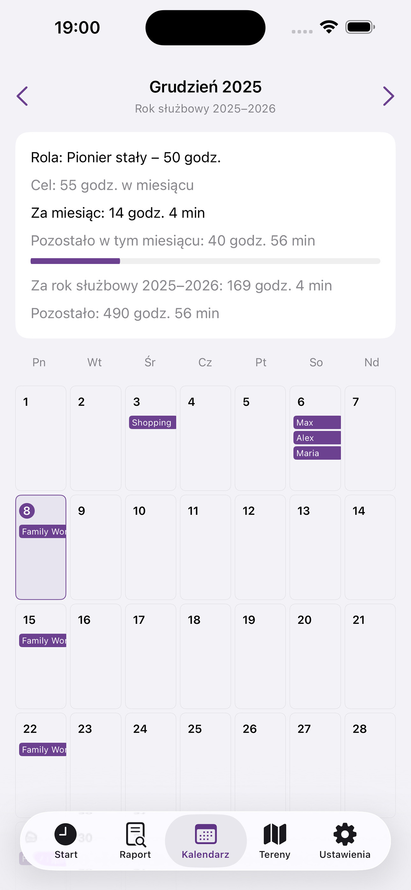
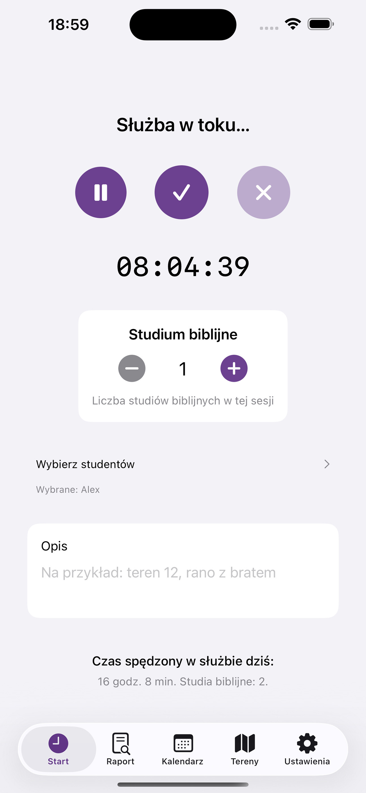
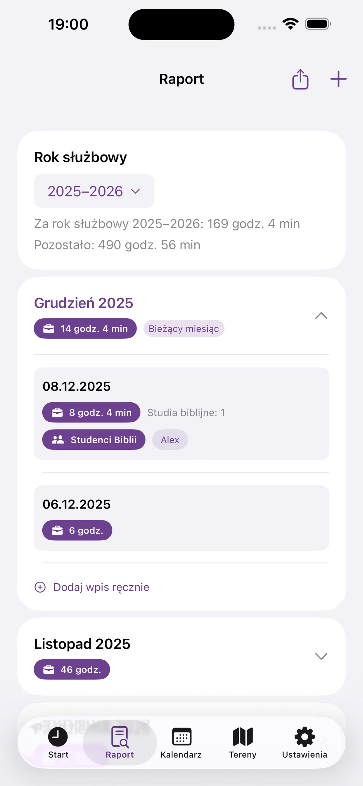
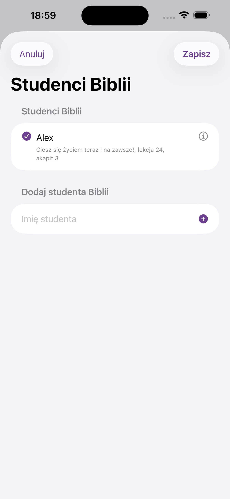
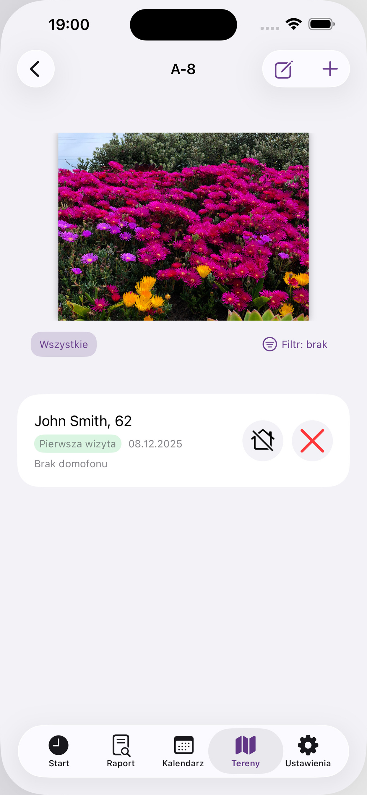
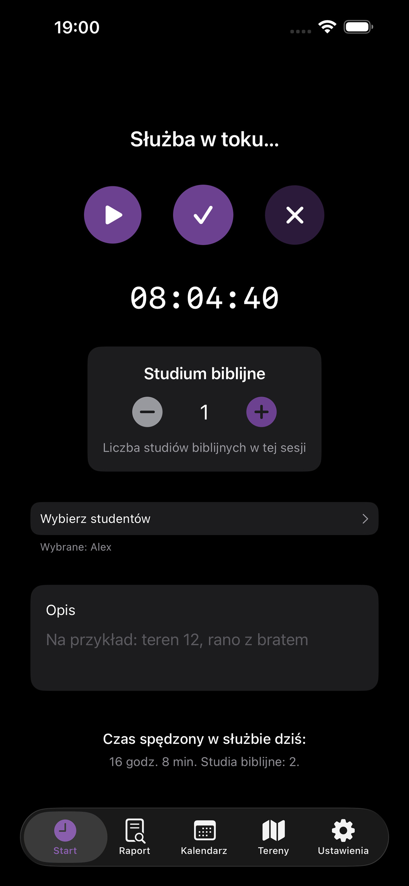
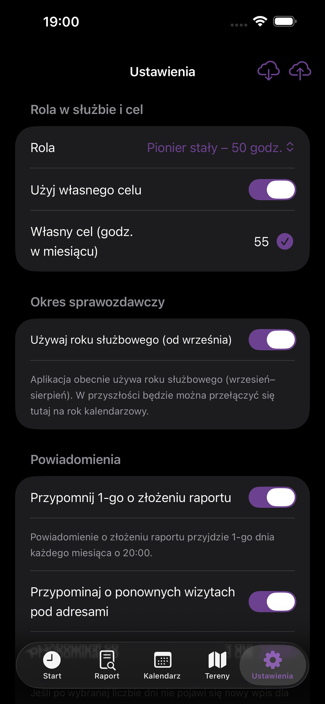

Twój kompletny pomocnik w służbie kaznodziejskiej i pionierskiej
JW Ministry to dedykowana aplikacja do służby polowej Świadków Jehowy na iPhone'a i iPada: dokładny minutnik z Live Activities, postępy zainteresowanych, sprawozdania miesięczne i roczne, cel godzin pioniera oraz karty terenów.



Poznaj każdy ekran aplikacji JW Ministry
Prawdziwe zrzuty ekranu w języku polskim — od minutnika służby i listy studiów biblijnych po kalendarz pioniera, tereny i tryb ciemny OLED.






Wszystko, czego potrzebujesz do zorganizowanej służby
Stworzone specjalnie pod kątem codziennych potrzeb głosicieli, pionierów pomocniczych, stałych i specjalnych.
Minutnik, widżety i Dynamic Island
Uruchamiaj minutnik służby z aplikacji, widżetu na ekranie głównym lub ekranu blokady. Aktywny czas jest zawsze widoczny na Dynamic Island.
Studia biblijne i postępy w lekcjach
Przypisuj studia biblijne bezpośrednio do wpisów sprawozdania. Zapisuj publikację (np. „Już zawsze ciesz się życiem!”), lekcję i punkt każdego zainteresowanego.
Role służby i osobiste cele godzinowe
Obsługuje Głosiciela, Pioniera pomocniczego (15 lub 30 godz.), Pioniera stałego (50 godz.), Pioniera specjalnego (90 / 100 godz.) oraz indywidualny cel miesięczny.
Rok służbowy (wrzesień–sierpień) i Kalendarz
Planuj zbiórki do służby i wielbienie w gronie rodziny. Porównuj godziny zaplanowane z rzeczywistymi i zamieniaj plany we wpisy sprawozdania jednym gestem.
Tereny, budynki mieszkalne i odwiedziny ponowne
Twórz karty terenów ze zdjęciami map, 10 kolorami i generatorem mieszkań według klatek i pięter. Szukaj po adresie lub imieniu i otrzymuj przypomnienia o odwiedzinach ponownych.
100% prywatności na urządzeniu i kopie iCloud
Bez rejestracji, kont i zewnętrznych serwerów. Wszystkie zapiski i zdjęcia terenów zostają wyłącznie na Twoim iPhonie/iPadzie z opcją eksportu do iCloud Drive.
Co nowego w wersji 1.8
- Automatyczna suma zaplanowanych godzin w miesiącu w Kalendarzu oraz podwójny pasek Plan vs. Rzeczywistość.
- Zamiana zaplanowanego spotkania z Kalendarza we wpis Sprawozdania jednym przesunięciem palca.
- Błyskawiczne wyszukiwanie po adresie lub imieniu we wszystkich terenach oraz 10 kolorów kart terenów.
- Obsługa nadchodzącego roku służbowego (2026–2027) w zakładce Sprawozdanie.
- Pełna optymalizacja pod najnowsze wersje iOS i iPadOS oraz wzmocniona ochrona kopii zapasowych.
Dlaczego głosiciele i pionierzy wybierają JW Ministry
Porównanie możliwości przy planowaniu służby, prowadzeniu terenów i wysyłaniu sprawozdania.
| Funkcja | Notatnik papierowy | Starsze aplikacje | JW Ministry 1.8 |
|---|---|---|---|
| Minutnik na żywo na ekranie blokady i Dynamic Island | Nie | Nie | Tak (Live Activities) |
| Kalkulator godzin pioniera (15, 30, 50 godz.) i roku służbowego (600 godz.) | Ręcznie | Częściowo | Automatycznie + własny cel |
| Porównanie Plan vs. Czas w Kalendarzu i przesunięcie do Sprawozdania | Nie | Nie | Jednym gestem |
| Generator bloków mieszkalnych + zdjęcia map i 10 kolorów | Kartki papieru | Tylko tekst | Wizualne karty + wyszukiwarka |
| Przypomnienia o odwiedzinach ponownych i sprawozdaniu 1. dnia miesiąca | Nie | Rzadko | Powiadomienia iOS |
| 100% prywatności offline i pełna kopia zapasowa ze zdjęciami w iCloud | Łatwo zgubić | Błędy przy zmianie telefonu | 100% Offline i bezpiecznie |
| Wsparcie dla nowego iOS, iPada, trybu OLED i ponad 35 języków | — | Brak aktualizacji | Natywny SwiftUI |
Stworzona do służby kaznodziejskiej i pionierskiej Świadków Jehowy
Jak JW Ministry pomaga głosicielom, pionierom pomocniczym i stałym przez cały rok służbowy.
Dla pionierów stałych i specjalnych (50, 90 i 100 godz. / 600 godz. rocznie)
Śledź miesięczny cel 50 godzin oraz roczny cel 600 godzin w roku służbowym od września do sierpnia. Ustaw własny cel miesięczny (np. 55 godz.) i porównuj w Kalendarzu godziny zaplanowane z faktycznie spędzonymi w służbie.
- Automatyczny bilans 50 godz. miesięcznie i 600 godz. w roku służbowym
- Osobisty cel miesięczny (np. 55 godz.)
- Podwójny pasek postępu: planowane vs. zgłoszone godziny
Dla pionierów pomocniczych (15 i 30 godz.) oraz głosicieli
Podczas kampanii specjalnych, wizyty nadzorcy obwodu lub okresu Pamiątki przełącz rolę na Pioniera pomocniczego (15 lub 30 godz.). Automatyczne przypomnienie 1. dnia miesiąca o 20:00 pomoże Ci pamiętać o sprawozdaniu.
- Szybki wybór celu 15 lub 30 godzin
- Udostępnianie gotowego sprawozdania jednym dotknięciem
- Przypomnienie 1. dnia każdego miesiąca o 20:00
Tereny od domu do domu, bloki mieszkalne i odwiedziny ponowne
Twórz cyfrowe karty terenów ze zdjęciem mapy, 10 kolorami i generatorem mieszkań według klatek i pięter. Zapisuj status „Pierwsza wizyta”, „Nieobecny” lub „Odmowa” i korzystaj z wyszukiwarki adresów.
- Generator mieszkań według klatek schodowych i pięter
- Zdjęcia map terenów, 10 kolorów i szybkie wyszukiwanie
- Automatyczne przypomnienia o odwiedzinach ponownych
Postępy studiów biblijnych i nowoczesny następca starszych aplikacji
Zapisuj postępy każdego zainteresowanego w podręczniku „Już zawsze ciesz się życiem!”. Jako natywna aplikacja iOS i iPadOS z widżetami i Dynamic Island stanowi idealną alternatywę dla ServicePlanner czy MyTime.
- Śledzenie lekcji w książce „Już zawsze ciesz się życiem!”
- Natywna obsługa widżetów, Dynamic Island i trybu OLED
- Nowoczesny zamiennik aplikacji ServicePlanner i MyTime
Opinie głosicieli i pionierów
Co mówią bracia i siostry korzystający z JW Ministry w codziennej służbie.
“Podsumowanie zaplanowanych godzin w Kalendarzu zestawione z faktycznym czasem bardzo ułatwia trzymanie się planu 50 godzin miesięcznie.”
“Minutnik na ekranie blokady i zamiana planu z Kalendarza we wpis sprawozdania jednym ruchem palca działają rewelacyjnie.”
“Generator klatek i mieszkań oraz wyszukiwarka po nazwisku lub adresie w terenach zastąpiły wszystkie moje papierowe notatki.”
Pełna lokalizacja na ponad 35 języków
Interfejs aplikacji, widżety i powiadomienia automatycznie dopasowują się do języka Twojego iPhone'a lub iPada:
Wesprzyj rozwój aplikacji JW Ministry
JW Ministry jest całkowicie darmowa, bez reklam i płatnych subskrypcji. Jeśli aplikacja pomaga Ci w służbie, możesz wesprzeć przyszłe aktualizacje iOS oraz roczną licencję Apple Developer:
Wsparcie kartą (Cały świat)
Szybkie wsparcie przez Boosty lub Patreon:
Kryptowaluty bezpośrednio (0% prowizji)
Bezpośredni przelew na portfel twórcy:
TQQxYhThQGngj887Lvq9TnKtyyYMcUDFNw
UQBNBroTUyMG0YqgiHGXwVKO_rKe5d2y7gXqvICREjBwuKYk
Często zadawane pytania (FAQ)
Jak JW Ministry uzupełnia aplikację JW Library?
Podczas gdy JW Library służy do czytania Biblii, publikacji i korzystania z zebrań, JW Ministry służy do organizacji osobistej służby kaznodziejskiej: mierzenia czasu, planowania godzin pioniera (15, 30, 50 godz.), prowadzenia kart terenów i studiów biblijnych.
Gdzie są przechowywane moje sprawozdania i notatki z terenów?
Wyłącznie lokalnie w pamięci Twojego iPhone'a lub iPada. Żadne dane nie są wysyłane na zewnętrzne serwery.
Jak przenieść dane na nowego iPhone'a?
W zakładce Ustawienia dotknij ikony chmury ze strzałką w górę, aby wyeksportować pełną kopię zapasową do iCloud Drive, a na nowym urządzeniu wczytaj ją jednym dotknięciem.
Czy aplikacja działa bez internetu podczas głoszenia?
Tak, aplikacja działa w 100% offline bez dostępu do sieci komórkowej czy Wi-Fi.